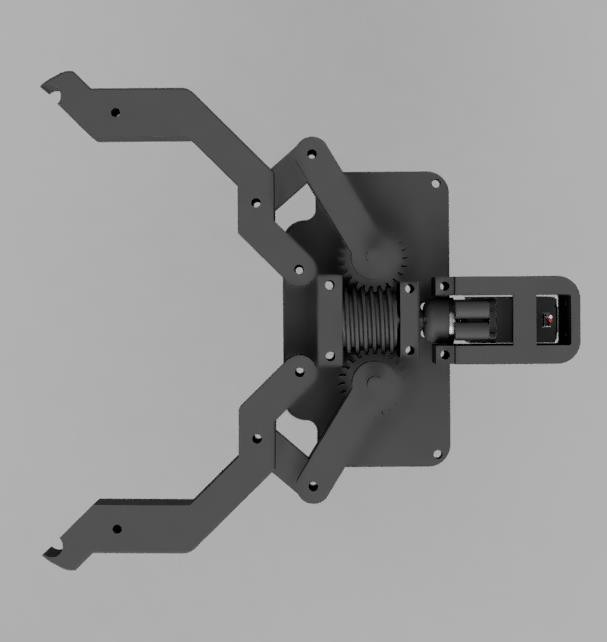

Robotic End Effector
Aug 2025 to presentIn progress
A worm-gear-driven 4-bar gripper for UB Space Bulls’ University Rover Challenge arm. I led its mechanical design.


The problem
The arm needs one device that can pick up a crate, type on a keyboard, and place a test tube in a cabinet and close the door. It also has to stay light, because every gram at the end of the arm is torque the joints behind it have to supply.
How it works
A servo spins a worm gear that drives two spur gears at a 24:1 reduction. Each spur gear moves a 4-bar linkage, so the two fingers close together. The opening at the front grabs small objects, and the wider section behind it holds larger ones when the fingers are closed.
What I did
I designed the main body and the joint that connects it to the team’s differential wrist. I designed the current PLA fingers and am working with teammates on TPU grips, comparing styles such as concave pads and compliant adaptive grips. I tested tolerances on every component, assembled the gripper, and programmed the servo with an Arduino Uno to open and close the fingers.
What testing showed
Driving the first build from the Arduino revealed major backlash in the gears and heavy friction in the linkage. I worked through both by testing different gear designs, adjusting tolerances, and adding brass heat-set inserts and ball bearings.
Key decisions
I chose the worm-driven 4-bar because of the clamping torque it provides. With a 25 kg·cm HiWonder HPS-2027 servo and the 24:1 reduction, the gripper has a 2.5× clamping torque safety margin for a 5 kg lift. I used M4 screws throughout to standardize hardware, and printed most of the gripper in PLA to keep it light.
Alternatives I considered
Lead screw
A lead screw could slide the fingers side to side instead of clamping. It provides less torque than the 4-bar, so I moved away from it.
Hot-swappable end effectors
The connecting joint could be made hot-swappable to accept a second gripper or a science module. Our science module is no longer going on the arm, so a second end effector isn’t needed right now.
Next iterations
Run empirical tests on TPU grip geometry, upgrade the plastic gears to metal to reduce backlash, and find a more stable connection between the servo and the worm screw.